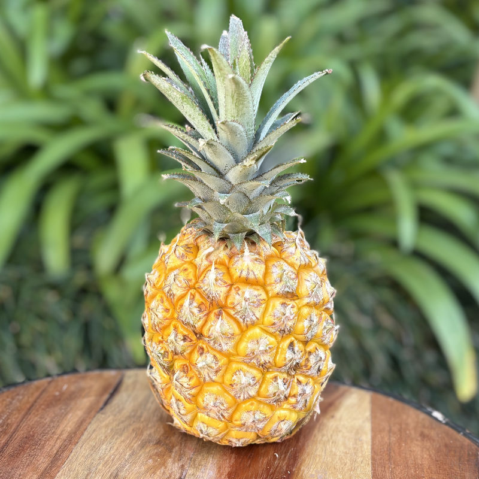
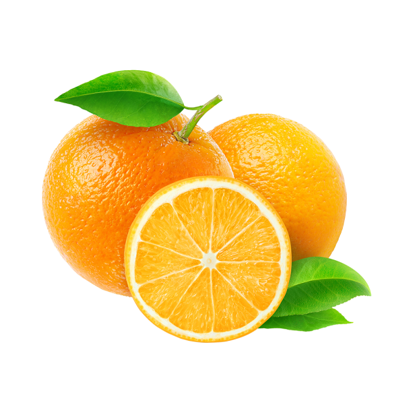
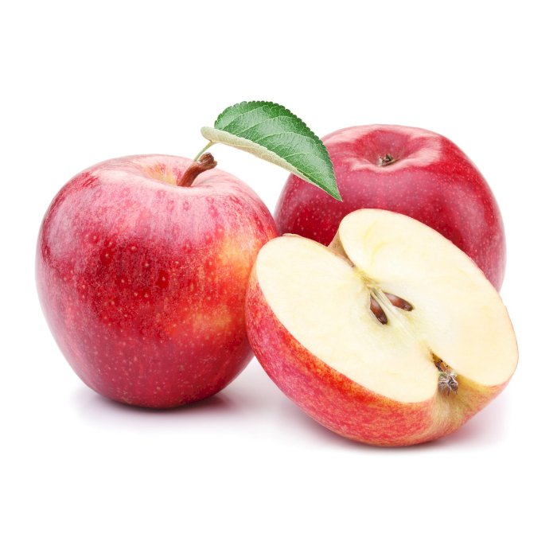
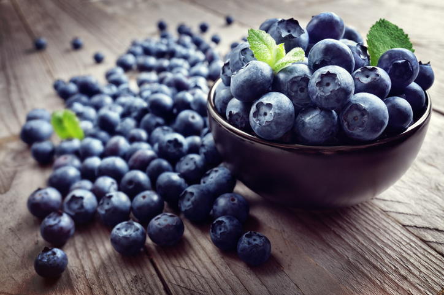
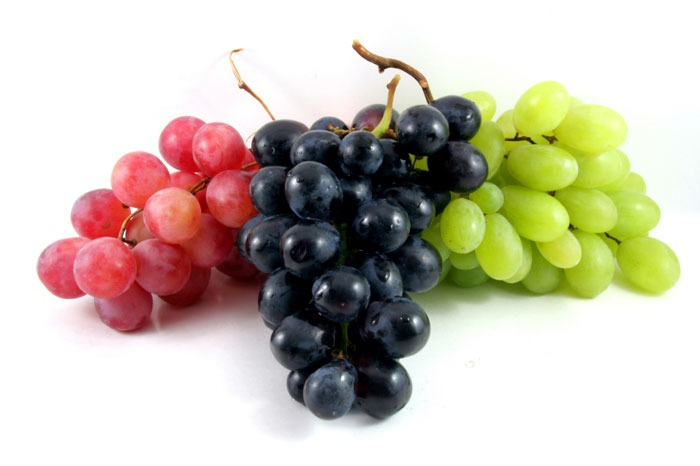
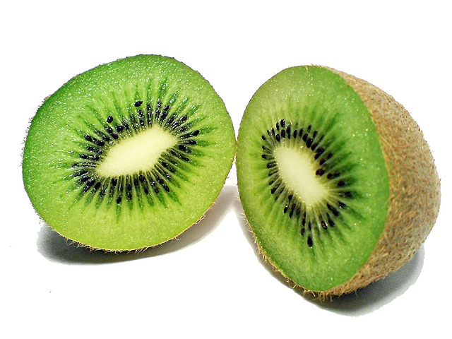
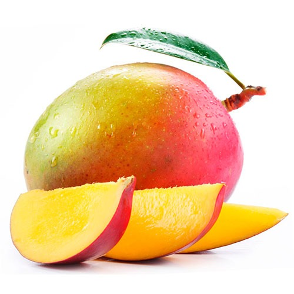
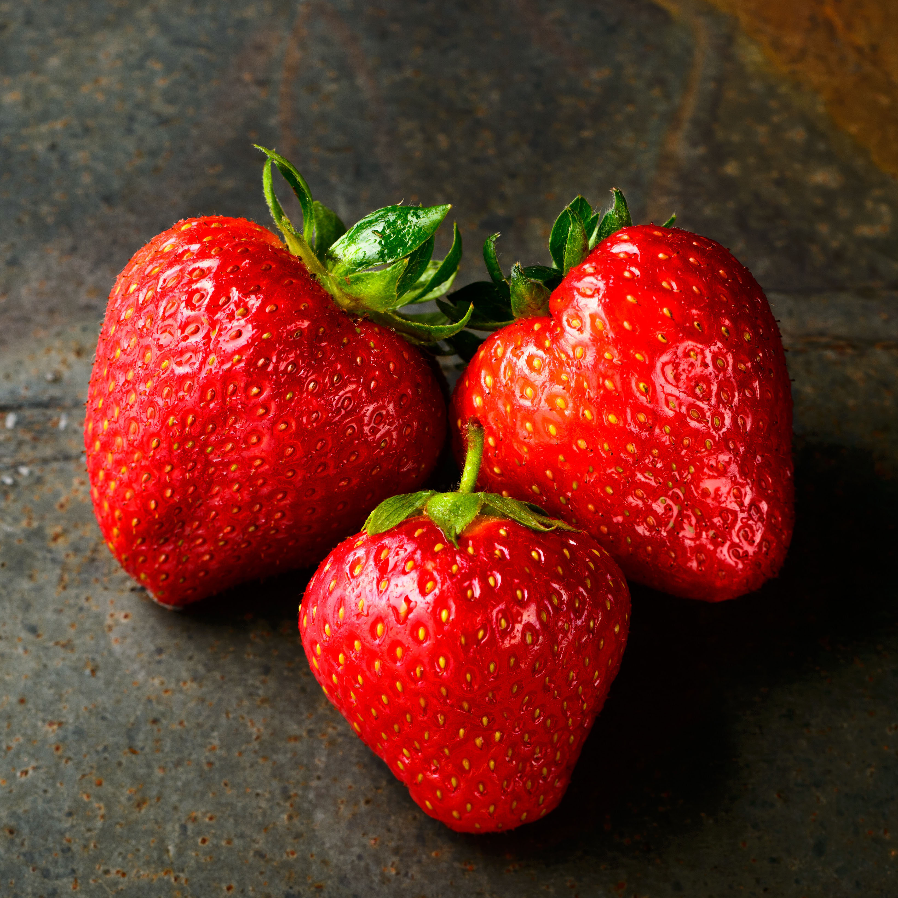
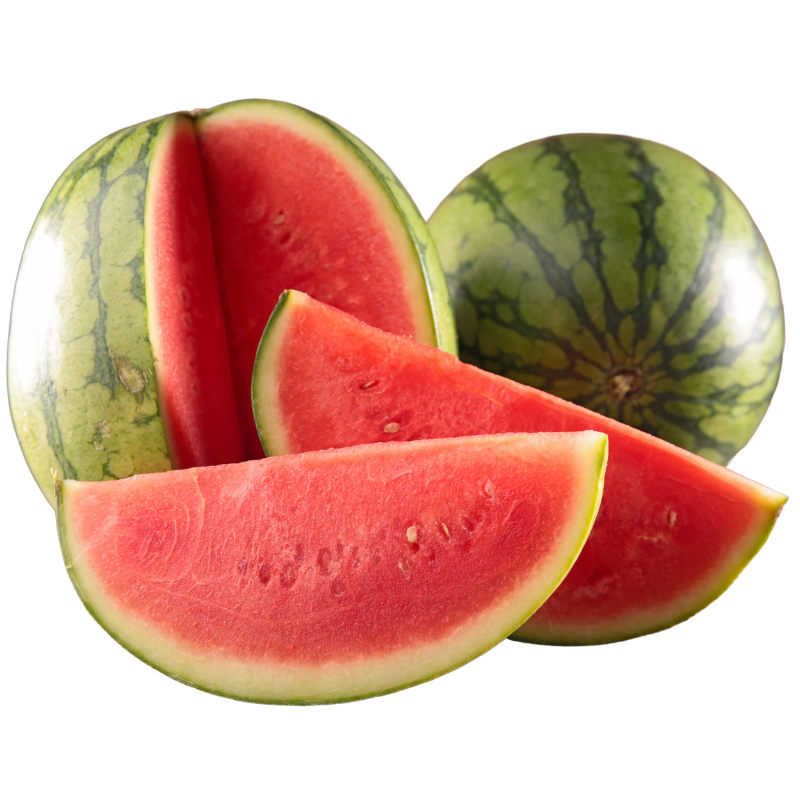

Banana
Bananas are one of the most popular fruits in the world.
They are usually yellow when ripe and have a soft, sweet taste. Bananas
contain potassium, fiber, and vitamins that help keep our bodies healthy.
They are easy to peel and eat, making them a convenient snack.
Bananas can also be used in smoothies, cakes, and other delicious foods.
Bananas have been grown by humans for thousands of years. They
originally came from Southeast Asia and spread to many parts of the world.

PineApple
Pineapple is a tropical fruit. It first grew in South America. Today, people grow
it in many warm countries around the world. It has hard skin, small sharp
parts, green leaves, and yellow flesh inside. Pineapple has a sweet and sour
taste. When it is ripe, it is usually sweet and juicy. It has a nice, fresh smell
and soft flesh. Sometimes, its juice can make your tongue feel a little sharp.
Its yellow color makes it look beautiful and fresh. Pineapple is good for our
health because it contains vitamin C. This vitamin helps our body stay
healthy. It also has other useful nutrients that our body needs every day.
People eat pineapple in many ways. They can eat it fresh, make juice, or add
it to fruit salads, cakes, and ice cream. Some people also use it in cooking to
give food a sweet and sour taste. It is a popular fruit for parties and family
meals. Pineapple grows on a small plant near the ground. It needs warm
weather, sunlight, and enough water to grow well. It takes several months for
the fruit to become ready to eat.

Orange
Oranges are popular fruits that grow on trees in warm countries. They have a
round shape and orange skin. Inside, they have juicy sections that are easy
to eat. Oranges have a sweet and slightly sour taste and a fresh, pleasant
smell. They contain vitamin C, which helps keep our bodies healthy. People
eat oranges fresh or use them to make juice, cakes, and other foods. Orange
trees have green leaves and beautiful white flowers. They need sunlight,
water, and warm weather to grow well. Oranges are enjoyed by people
around the world because they are tasty, healthy, and refreshing. They are
often eaten at breakfast or as a snack during the day.

Apple
Apples are among the most popular and widely grown fruits in the world.
They grow on trees and come in many varieties, with skin that may be red,
green, yellow, or a mixture of these colors. Their flesh is usually crisp,
juicy, and refreshing. Depending on the variety, apples can taste sweet,
mildly sour, or pleasantly tangy. They have a fresh, light smell and contain
fiber, vitamin C, and other nutrients that support a healthy diet. People
often wash and eat apples whole, cut them into slices, or add them to fruit
salads. Apples are also used to make juice, pies, cakes, sauces, jams,
and other delicious foods. Apple trees grow best in places with suitable
seasons, plenty of sunlight, and well-drained soil. The fruit originally came
from Central Asia, but it is now cultivated in many countries around the
world. Apples are easy to carry and simple to prepare, making them a
convenient snack at school, work, or home. Some varieties stay firm and
crunchy, while others become soft when cooked.

Blueberry
Blueberries are small, round fruits that are usually dark blue or purple
when ripe. They have a sweet and slightly sour taste, with a juicy texture
and a refreshing smell. Blueberries contain vitamins, fiber, and
antioxidants that help keep our bodies healthy. They can be eaten fresh or
added to smoothies, cakes, yogurt, and other delicious foods. Blueberries
originally came from North America and have been enjoyed by people for
centuries. Today, they are grown in many countries with suitable climates
and are popular around the world.

Grapes
Grapes are small, juicy fruits that grow in clusters on vines. They come in
different colors, including green, red, purple, and black. Grapes have a
sweet or slightly sour taste and a smooth, thin skin. They contain vitamins,
fiber, and antioxidants that help keep our bodies healthy. Grapes can be
eaten fresh or used to make juice, jam, raisins, and other delicious foods.
They have been grown by humans for thousands of years. Grapes
originally came from regions of Europe, North Africa, and Western Asia.
Today, they are cultivated in many countries and enjoyed by people
around the world.

Kiwi
Kiwis are small, oval-shaped fruits with brown, fuzzy skin and bright green
or golden flesh. They have a refreshing, sweet, and slightly sour taste,
with tiny black seeds that are safe to eat. Kiwis contain vitamin C, fiber,
and antioxidants that help keep our bodies healthy. Their soft, juicy texture
makes them enjoyable to eat with a spoon or add to fruit salads. They can
also be used in smoothies, desserts, and fresh juices. Kiwis originally
came from China, where they were known as Chinese gooseberries.
Later, they became popular in New Zealand and received their current
name. Today, kiwis are grown in several countries and enjoyed worldwide.

Mango
Mangoes are popular tropical fruits known for their delicious taste, sweet
smell, and beautiful colors. They have smooth skin that can be green,
yellow, orange, or red when ripe. Their flesh is soft, juicy, and sweet,
although some varieties have a slightly sour taste. Mangoes contain
vitamins A and C, fiber, and antioxidants that help keep our bodies healthy.
They can be eaten fresh or used in smoothies, juices, ice cream, cakes,
and other tasty foods. Mangoes originally came from South Asia,
particularly India and Myanmar, and have been grown by humans for
thousands of years. Today, they are cultivated in many tropical and
subtropical countries around the world. India is one of the largest mango
producers. Mango trees can grow very tall and produce fruit during warm
seasons. Because of their wonderful flavor, nutritional value, and many
uses, mangoes are often called the king of fruits. They are enjoyed by
millions of people worldwide.

Strawberry
Strawberries are popular fruits known for their bright red color, sweet
taste, and refreshing smell. They have a soft, juicy texture and tiny seeds
on their outer surface. Strawberries are rich in vitamin C, fiber, and
antioxidants that help keep our bodies healthy. They can be eaten fresh or
added to fruit salads, smoothies, cakes, ice cream, and other delicious
foods. Strawberries are also used to make jam, juice, and sweet desserts.
They usually grow on small plants close to the ground and develop best in
suitable climates. Although many people think strawberries are berries in
the botanical sense, they are not considered true berries. Strawberries
have been enjoyed by humans for centuries. Today, they are cultivated in
many countries around the world. Their beautiful appearance, pleasant
fragrance, and delicious flavor make them a favorite fruit for children and
adults alike.

Watermelon
Watermelons are large, refreshing fruits that are especially popular during
the summer. They usually have green skin, red or pink flesh, and small
black seeds, although some varieties have yellow flesh. Watermelons
have a sweet taste, a juicy texture, and a fresh, mild smell. They contain
plenty of water, along with vitamins A and C, which help keep our bodies
healthy. Watermelons can be eaten fresh or used in fruit salads,
smoothies, and refreshing drinks. They originally came from Africa, where
they have been grown for thousands of years. Today, watermelons are
cultivated in many warm countries around the world. Their high water
content makes them a wonderful fruit for hot days. Because of their
sweetness, freshness, and delicious flavor, watermelons are enjoyed by
people of all ages.

Buddha's hand
Buddha's hand is an unusual citrus fruit known for its bright yellow color
and finger-like sections. Unlike most citrus fruits, it usually has no pulp or
juice inside. Instead, it has a thick, fragrant peel with a sweet, lemon-like
smell. Its taste is mildly bitter when raw, but the peel can be used to add a
refreshing citrus flavor to desserts, tea, and other foods. Buddha's hand is
also used to make candied fruit and to flavor dishes. It originally came
from Asia, particularly China and northeastern India. The fruit has cultural
importance in some Asian traditions, where it can symbolize happiness,
good fortune, and long life. Today, Buddha's hand is grown in several
countries with warm climates. Its unusual appearance and wonderful
fragrance make it one of the most fascinating citrus fruits in the world.

Carob
Carob is a unique fruit that grows in long, dark brown pods on evergreen
trees. It has a naturally sweet taste, similar to chocolate, with a mild
caramel flavor. Inside the pods, there is a soft, chewy pulp and several
hard seeds. Carob contains fiber, minerals, and natural sugars that
provide energy. It is often dried, ground into powder, and used as a
substitute for cocoa in drinks, cakes, and other foods. Unlike cocoa, carob
naturally contains no caffeine. Carob trees originally came from the
Mediterranean region and the Middle East, where they have been grown
for thousands of years. Today, they are cultivated in many warm countries.
The trees are drought-resistant and can grow in dry conditions. Carob is
valued for its sweetness, nutritional content, and many uses in traditional
and modern cooking.